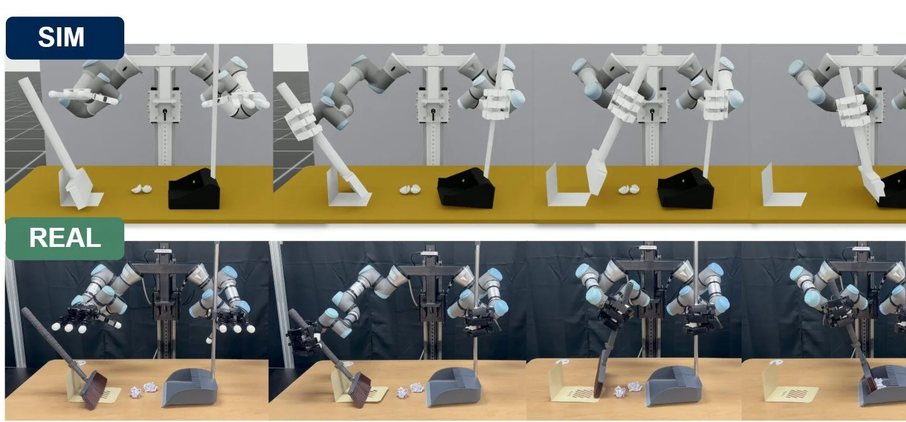

ICCR 2026Under review심사 중
TMAD: Temporal Multi-Agent Distillation for Bimanual Long-Horizon Manipulation
First author. 8th International Conference on Control and Robotics.제1저자. 8th International Conference on Control and Robotics
Graduating February 2027, open to full-time roles2027년 2월 졸업 예정, 채용 문의 환영
Robot learning for bimanual manipulation양팔 로봇 조작을 위한 Robot learning
Policies trained only in simulation, run on a real two-arm robot with no additional real-robot training.시뮬레이션에서만 학습한 양팔 Policy를 실물 추가 학습 없이 실제 로봇에 전이
Now현재M.S. student, Kyung Hee University경희대학교 대학원 석사과정
Robot로봇UR3 × 2, Allegro Hand × 2
Tools도구Isaac Lab, PyTorch, PPO, LeRobot
72.0%
Pick-and-Place, real robotPick-and-Place, 실물
Baseline 28.0%
84.0%
Handover, real robotHandover, 실물
Baseline 24.0%
75
Real-robot trials per task작업별 실물 시행
3 runs × 25 trials
01/Work
Four projects from my M.S., from simulation assets to a policy running on a real robot.석사 과정의 네 프로젝트. Simulation asset부터 실제 로봇에서 동작하는 Policy까지
01/Research, first author연구, 제1저자/2026
A teacher that reads object states in simulation, distilled into a student that sees two RGB images and joint states. Only the student runs on the real robot.Simulation에서 물체 상태를 받는 Teacher를, 영상 두 장과 관절 값만 보는 Student로 Distillation. 실제 로봇에서는 Student만 실행
Instruction지시문"Put the green can on the pad first, then the red can."
VLM plannergreen
SmolVLA"put the green can on the pad"


02/Personal project개인 프로젝트/2026.10/Simulation
A fine-tuned VLM picks the next skill, SmolVLA moves both arms. Grasp failures fixed with takeover DAgger and Residual RL distillation.Fine-tuning한 VLM이 다음 skill을 고르고 SmolVLA가 두 팔을 움직임. Grasp 실패는 Takeover DAgger와 Residual RL distillation으로 해결

03/Co-author공동저자/UR 2026
A YOLO detector that starts FoundationPose tracking without a person, a CAD broom for Isaac Lab, and a bimanual sweeping task with stage-wise rewards.사람 개입 없이 FoundationPose 추적을 시작하는 YOLO detector, Isaac Lab용 CAD 빗자루, 단계별 Reward의 양팔 쓸기 작업

04/Simulation assets/2025 ~ 2026
Broom and supporter modeled in CAD, a dustpan resized to the lab one, cans with real label textures. Appearance from photos, collision from separate colliders.빗자루와 서포터는 CAD로 직접 모델링, 쓰레받기는 실험실 크기로, 캔은 실물 라벨 텍스처. 겉모습은 실물 사진 기준, 충돌은 별도 Collider
02/About
M.S. student at Kyung Hee University, advised by Prof. Tae-Seong Kim. I train policies for a robot with two UR3 arms and Allegro hands in Isaac Lab and test them on the real robot. Before robotics, I took part in medical imaging collaborations and built the AI part of a food recognition app.경희대학교 대학원 석사과정, 지도교수 김태성. Isaac Lab에서 UR3 양팔과 Allegro Hand 로봇의 Policy를 학습하고 실제 로봇에서 검증합니다. 로봇 연구 전에는 의료영상 공동연구에 참여했고 음식 인식 앱의 AI 파트를 맡았습니다.
01
02
03
04
03/Background
Education학력
2025.03 ~ 2027.02
Kyung Hee University. Graduating February 2027.경희대학교 대학원, 2027년 2월 졸업 예정
2019.03 ~ 2025.02
Kyung Hee University경희대학교
Experience경험
2024.06 ~ 08
Temperature measurement experiments on HIFU and RF devices. Automated clinical data processing with Excel VBA.HIFU와 RF 장비 온도 측정 실험. VBA로 임상 데이터 정리 자동화
2024.10
AI part of the diet app My GPTrainer, shared by two: about 60k synthetic images of 400 Korean dishes, three YOLO models compared, on-phone recognition with TFLite.음식 사진 식단 관리 앱 My GPTrainer의 AI 파트를 둘이 맡아, 한식 400종 합성 이미지 약 6만 장과 YOLO 3종 비교, TFLite로 휴대전화 인식
2024.04 ~ 12
Founded the club with members recruited by interview. Split 10 members into two teams; both teams won awards at the campus competition.동아리원을 면접으로 모아 창업동아리를 만들고, 10명을 두 팀으로 나눠 교내 경진대회에서 두 팀 모두 수상
Undergraduate학부
Device that measures grip force and EMG together. Mechanics, circuit and firmware with ATmega128 and HX711.악력과 근전도(EMG)를 함께 재는 측정 장치. ATmega128, HX711로 기구, 회로, Firmware 제작
04/Publications
TMAD: Temporal Multi-Agent Distillation for Bimanual Long-Horizon Manipulation
First author. 8th International Conference on Control and Robotics.제1저자. 8th International Conference on Control and Robotics
An Upper-Humanoid Real2Sim2Real System for Bimanual Long-Horizon Manipulation
23rd International Conference on Ubiquitous Robots, Osaka, July 2026.23rd International Conference on Ubiquitous Robots, Osaka, 2026.07
IEEE International Conference on Communications and Electronics. Early PPO implementation and dataset model training.IEEE International Conference on Communications and Electronics. PPO 초기 구현과 데이터셋 모델 학습 참여
Medical Imaging with Deep Learning. Early PPO implementation and dataset model training.Medical Imaging with Deep Learning. PPO 초기 구현과 데이터셋 모델 학습 참여
Patent특허
Korean patent application, filed September 2026국내 특허 출원, 2026.09
M.S. thesis석사 학위논문
Kyung Hee University, February 2027 (expected)경희대학교, 2027.02 예정
05/Contact
parksh000124@gmail.comNext, I want to carry this path, from Isaac Lab assets through teacher-student distillation to real-robot validation, into research that adds simulation RL to VLA and world models, toward robot intelligence that works reliably in homes and factories.Isaac Lab asset부터 Teacher-Student Distillation, 실물 검증까지 이어본 경험을 VLA와 World Model에 시뮬레이션 강화학습을 더하는 연구로 이어, 가정과 공장에서 높은 성공률로 쓰이는 로봇 지능을 만들고 싶습니다.